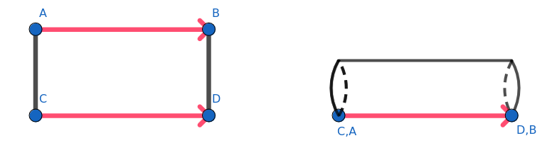
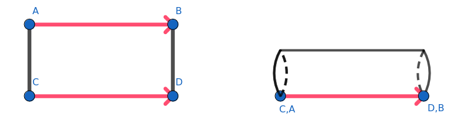

Shortest Paths in Portalgons
TODO
- Introduce the problem
- Restrict the polygons we talk about
- explain restrictions
- Tell the reader you present only intuitions
- present the DataStructure
- explain what an envelope is
- image it
- show example pictures of talked (what are portals on a cut polygon?) constructions
Explain it is a generalization of any shape from 2 to 3 D
Introduction
What are Portalgons?
First let us define some basic notions of Portalgons.
Portalgons are essentially a collection of simple polygons called fragments, where any edge of such fragment can be part of a portal.
A portal is a couple of oriented edges of equal length that define a communicating pair of fragments.
Meaning we can access through portal edges another fragment from the one we seat in.


 
We here limit ourselves to 1-happy portalgons whose fragments are simple polygons.
The happiness describes the number of times we are allowed to cross a portal.
We describe later on why such limitation is necessary.

We here limit ourselves to 1-happy portalgons whose fragments are simple polygons.
The happiness describes the number of times we are allowed to cross a portal.
We describe later on why such limitation is necessary.
Generalization
We note portalgons are in fact the most general representation of any shape.
A polyhedron being a
Applications
Are there any real examples of Portalgons?
Shortest Paths
A shortest path in a portalgon is the shortest path between a pair of points lying within its surface (of any fragment), source and destination, such that this is the shortest distance path between the two points.
There can in fact be multiple shortest paths between the two points as we are allowed to cross through portals.
Being intrinsicly polyhedral, meaning that can take place in the third dimension, we need to think carefully about the procedures we will use in order to find such a path, as finding a shortest path now requires to handle more spaces or fragments that may lead to multiple crossings of the same portal which could lead to an unbounded amount of crossings on some cases.
Data Structure
We here present the data structure that maintains the informations in order to compute on such dimension.
Authors
- Schleusner Shan
- Vannimmen Mathieu
- Testaert Sacha
References
- [1] M.Löffler, T.Ophelders, F.Staals, R.I.Silveira, "Shortest Paths in Portalgons", arXiv:2303.08937v1 [cs.CG] 15 Mar 2023
- [2] Wolfgang Muzler, "Shortest Paths in Polygons", Frei Universität Berlin, 22 april 2021
- [3] JOSEPH S. B. MITCHELLt, DAVID M. MOUNT AND CHRISTOS H. PAPADIMITRIOU, "THE DISCRETE GEODESIC PROBLEM", Vol. 16, No. 4, Society for Industrial and Applied Mathematics, pp. 647-668, Aug. 1987